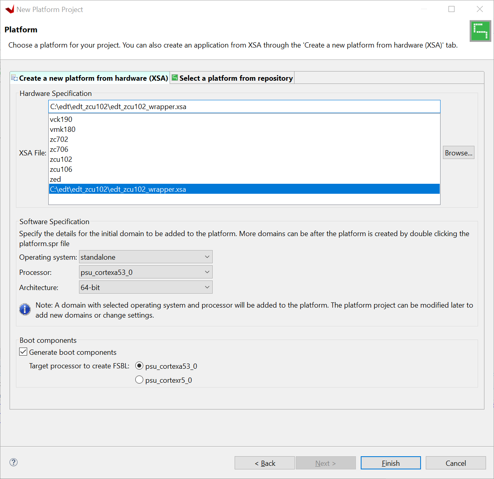
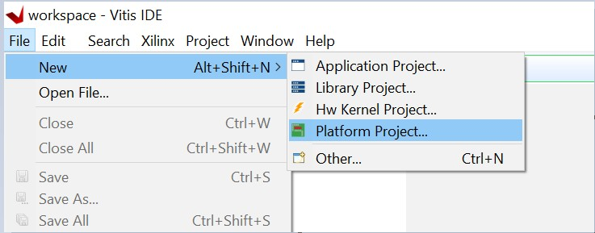
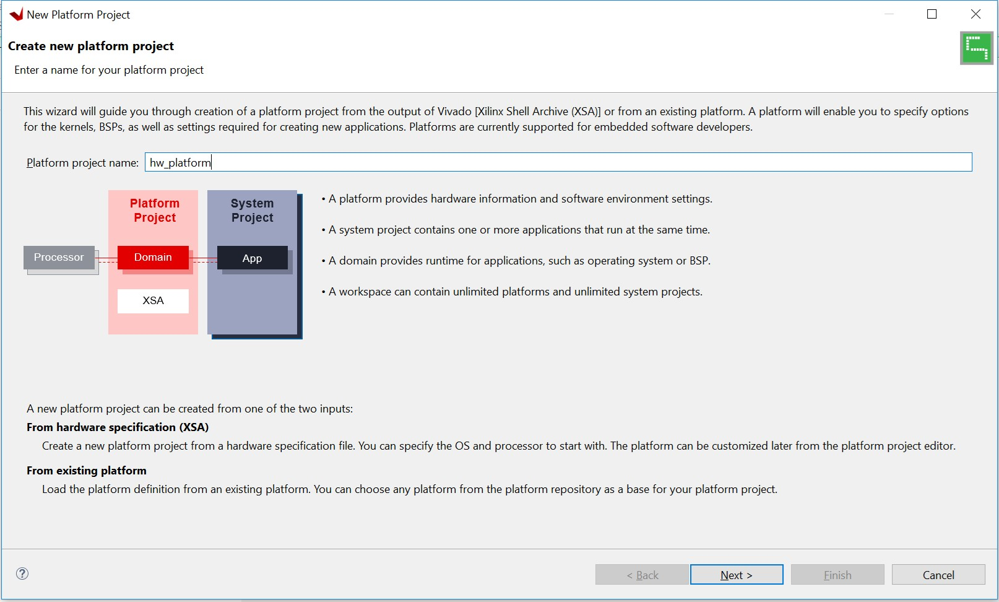
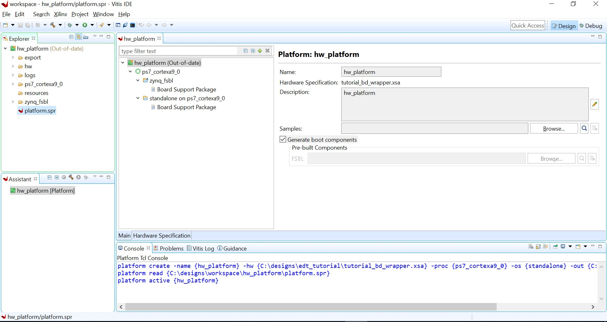
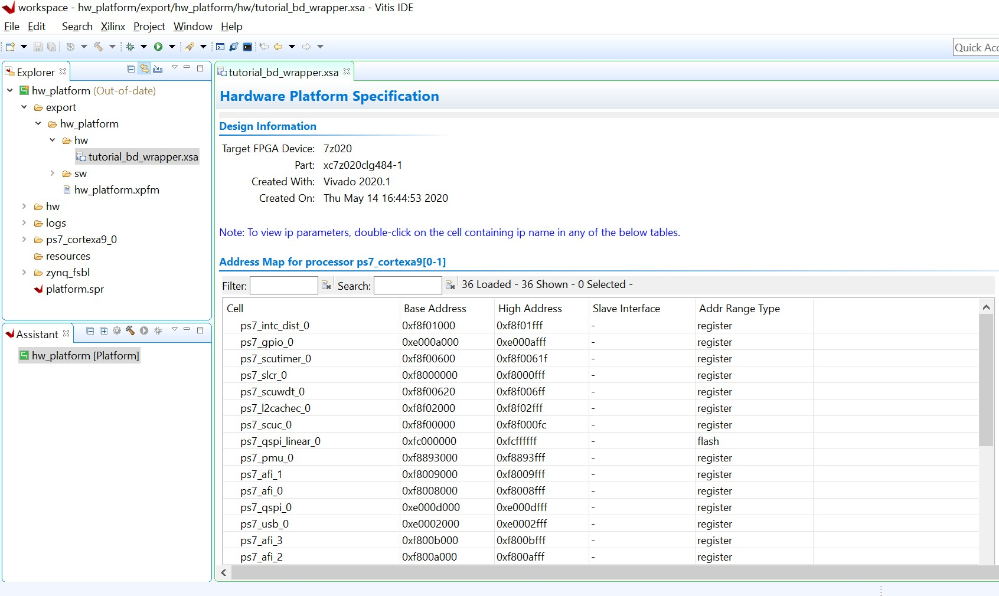
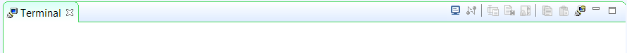
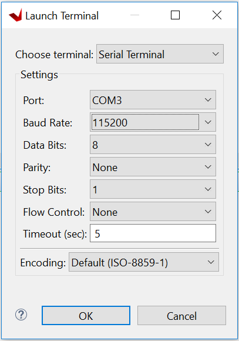
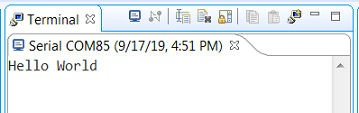
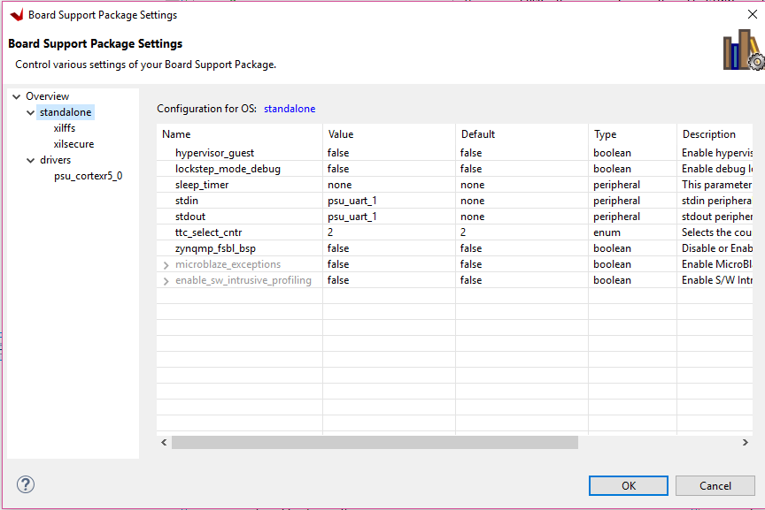

Read this page in other languages:日本語
Zynq-7000 SoC Embedded Design Tutorial 2020.2 (UG1165) | |||||
|---|---|---|---|---|---|
| 1. Introduction | 2. Using the Zynq SoC Processing System | 3. Using the GP Port in Zynq Devices | |||
| 4. Debugging with the Vitis Software Platform | 5. Using the HP Slave Port with AXI CDMA IP | 6. Linux Booting and Debug in the Vitis Software Platform | |||
| 7. Creating Custom IP and Device Driver for Linux | 8. Software Profiling Using the Vitis Software Platform | 9. Linux Aware Debugging | |||
Using the Zynq SoC Processing System¶
Design Files for this Tutorial¶
The ZIP file associated with this document contains the design files for the tutorial. You can download this file from this link.
Design files contain the HDF files for each section, and the source code and pre-built images forall the sections.
Now that you have been introduced to the Xilinx® Vivado® Design Suite, you will begin looking at how to use it to develop an embedded system using the Zynq®-7000 SoC processing system (PS).
The Zynq SoC consists of Arm® Cortex™-A9 cores, many hard intellectual property components (IPs), and programmable logic (PL). This offering can be used in two ways:
The Zynq SoC PS can be used in a standalone mode, without attaching any additional fabric IP.
IP cores can be instantiated in fabric and attached to the Zynq PS as a PS+PL combination.
Embedded System Configuration¶
Creation of a Zynq device system design involves configuring the PS to select the appropriate boot devices and peripherals. To start with, as long as the PS peripherals and available MIO connections meet the design requirements, no bitstream is required. This chapter guides you through creating a simple PS-based design that does not require a bitstream.
Example Project: Creating a New Embedded Project with Zynq SoC¶
For this example, you will launch the Vivado Design Suite and create a project with an embedded processor system as the top level.
Starting Your Design¶
Start the 2020.1 Vivado Design Suite.
In the Vivado Quick Start page, click Create Project to open the New Project wizard.
Use the information in the table below to make selections in each of the wizard screens.
|
|
|
|---|---|---|
| Project Name | Project name | edt_tutorial |
| Project Location | C:/designs | |
| Create Project Subdirectory | Leave this checked | |
| Project Type | Specify the type of sources for your design. You can start with RTL or a synthesized EDIF. | RTL Project |
Do not specify sources at this time check box |
Leave this unchecked. | |
| Add Sources | Do not make any changes to this page. | |
| Add Constraints | Do not make any changes to this page. | |
| Default Part | Select | Boards |
| Board | ZYNQ-7 ZC702 Evaluation Board | |
| New Project Summary | Project Summary | Review the project summary. |
Click Finish. The New Project wizard closes and the project you just created opens in the Vivado design tool.
Creating an Embedded Processor Project¶
Perform the following steps to create an embedded processor project.
In the Flow Navigator, under IP Integrator, click Create Block Design.

The Create Block Design dialog box opens.
Use the following information to make selections in the Create Block Design dialog box.
Screen
System Property
Setting or Command to Use
Create Block Design Design name tutorial_bd Directory <Local to Project> Specify source set Design Sources Click OK.
The Diagram window opens with a message that states that this design is empty. To get started, you will next add some IP from the catalog.
Click the Add IP button.
In the search box, type zynq to find the Zynq device IP options.
Double-click the ZYNQ7 Processing System IP to add it to the block design.

The Zynq SoC processing system IP block appears in the Diagram view, as shown in the following figure.
Managing the Zynq7 Processing System in Vivado¶
Now that you have added the processor system for the Zynq SoC to the design, you can begin managing the available options.
Double-click the ZYNQ7 Processing System block in the Block Diagram window.
The Re-customize IP dialog box opens, as shown in the following figure. Notice that by default, the processor system does not have any peripherals connected.

You will use a preset template created for the ZC702 board. In the Re-customize IP dialog box, click the Presets button and select ZC702.
This enables many peripherals in the processing system with some multiplexed I/O (MIO) pins assigned to them as per the board layout of the ZC702 board. For example, UART1 is enabled and UART0 is disabled. This is because UART1 is connected to the USB-UART connector through UART to the USB converter chip on the ZC702 board.
Note the check marks that appear next to each peripheral name in the Zynq device block diagram that signify the I/O peripherals that are active.

In the block diagram, click one of the green I/O Peripherals. The MIO Configuration page opens for the selected peripheral.

Click OK to close the Re-customize IP dialog box. Vivado implements the changes that you made to apply the ZC702 board presets.
In the Block Diagram window, notice the message stating that Designer assistance is available, as shown in the following figure.

Click the Run Block Automation link. The Run Block Automation view opens.
Note that Cross Trigger In and Cross Trigger Out are disabled. For a detailed tutorial with information about cross trigger set-up, refer to the Vivado Design Suite Tutorial: Embedded Processor Hardware Design (UG940).
Click OK to accept the default processor system options and make default pin connections.
Validating the Design and Connecting Ports¶
Now, validate the design.
Right-click in the white space of the Diagram window and select Validate Design. Alternatively, you can press the F6 key.
A critical error message appears, indicating that the M_AXI_GP0_ACLK must be connected.

Click OK to clear the message.
In the Diagram window of the ZYNQ7 Processing System, locate the M_AXI_GP0_ACLK port. Hover your mouse over the connector port until the pencil button appears.
Click the M_AXI_GP0_ACLK port and drag to the FCLK_CLK0 input port to make a connection between the two ports.

Validate the design again to ensure there are no other errors. To do this, right-click in the white space of the Diagram window and select Validate Design.
A dialog box with the following message opens:
Validation successful. There are no errors or critical warnings in this design.Click OK to close the message.
Click the Sources window.
Click Hierarchy.
Under Design Sources, right-click tutorial_bd and select Create HDL Wrapper.

The Create HDL Wrapper view opens. You will use this view to create an HDL wrapper file for the processor subsystem.
TIP: The HDL wrapper is a top-level entity required by the design tools.
Select Let Vivado manage wrapper and auto-update and click OK.
In the Sources window, under Design Sources, expand tutorial_bd_wrapper.
Right-click the top-level block diagram, titled tutorial_bd_i : tutorial_bd (tutorial_bd.bd) and select Generate Output Products.
The Generate Output Products view opens, as shown in the following figure.

If you are running the Vivado Design Suite on a Linux host machine, you might see additional options under Run Settings. In this case, continue with the default settings.
Click Generate.
This step builds all required output products for the selected source. For example, constraints do not need to be manually created for the IP processor system. The Vivado tools automatically generate the XDC file for the processor subsystem when Generate Output Products is selected.
When the Generate Output Products process completes, click OK.
In the Sources window, click the IP Sources view. Here you can see the output products that you just generated, as shown in the following figure.

Synthesizing the Design, Running Implementation, and Generating the Bitstream¶
You can now synthesize the design.

In the Flow Navigator pane, under Synthesis, click Run Synthesis.
If Vivado prompts you to save your project before launching synthesis, click Save.
While synthesis is running, a status circle displays in the upper right-hand window. This status circle spools for various reasons throughout the design process. The status circle signifies that a process is working in the background.

When synthesis completes, the Synthesis Completed view opens.
Select Run Implementation and click OK.
Again, notice that the status bar describes the process running in the background. When implementation completes, the Implementation Completed view opens.
Select Generate Bitstream and click OK.
When bitstream generation completes, the Bitstream Generation Completed view opens.
Click Cancel to close the window.
After the bitstream generation completes, export the hardware and launch the Vitis unified software platform.
Exporting a Hardware Platform¶
From the Vivado main menu, select File→ Export → Export Hardware. The Export Hardware Platform wizard opens.
Use the information in the following table to make selections in each of the wizard screens. Click Next wherever necessary.
Wizard Screen
System Property
Setting or Command to Use
Export Hardware Platform
Platform type
Fixed
Output
Pre-synthesis
Files
XSA file name
Leave as tutorial_bd_wrapper
Export to
Leave as C:/designs/ edt_tutorial
Click Finish.

**TIP:** *The hardware is exported in a ZIP file (\<project
wrapper\>.xsa).*
What Just Happened?¶
Vivado has exported the hardware design to the hardware specification file (XSA).
What’s Next?¶
Now you can start developing the software for your project using the Vitis software platform. The next sections help you create a software application for your hardware platform.
Creating a Platform Project in the Vitis Software Platform with an XSA from Vivado¶
Launch the Vitis IDE by using the desktop shortcut or by double-clicking the C:\Xilinx\Vitis\2020.1\bin\vitis.bat file. The Eclipse Launcher view opens.
Select the workspace location as C:\designs\workspace or any given location path. The tool creates the workspace folder if it is not already created.

Click Launch. The Vitis integrated design environment (IDE) opens. Click File → New → Platform Project to create platform project from the output of Vivado Xilinx Shell Archive (XSA).

When the New Platform Project wizard opens, enter the platform project name as hw_platform, as shown in following figure. Click Next.

In the Platform page, click the Create a new platform from hardware (XSA) page. Under Hardware Specification, browse to the hardware specification file and select the XSA file C:\designs\edt_tutorial\tutorial_bd_wrapper.xsa. When the XSA file is selected, the Software Specification fields (Operating system and Processor) are updated to standalone and ps7_cortexa9_0 respectively. Keep the Generate boot components option selected, as shown in the following figure. Click Finish.

The platform project is created. In the Explorer view, double-click hw_platform → platform.spr to view the platform view as shown in the following figure.

In the Explorer view, expand export → hw_platform to find the exported Hardware Specification file, tutorial_bd_wrapper.xsa (under the hw folder), and the top-level platform XML file, hw_platform.xpfm. Double-click on the XSA file to see the address map for the entire processing system, as shown in the following figure.

Build the platform project either by clicking the hammer button or by right-clicking on the platform project and selecting Build Project as shown in following figure.

As the project builds, you can see the output in the console window. When the build completes, the Build Finished log appears in the Console view as shown in the following figure. The standalone BSP is built and the hw_platform.xpfm file is updated with this build.

Close the Vitis IDE using the File → Exit.
What Just Happened?¶
Using the Vitis IDE, you have created a platform project and exported the XSA file to the workspace in C:\designs\workspace. The export operation generated a standalone domain with a ps7_cortexa9_0 processor and an FSBL application project. You have built a platform project, and the generated Xilinx platform definition file (hw_platform.xpfm) can be used as a platform for the applications that you create in the Vitis IDE.
Example Project: Running the “Hello World” Application¶
In this example, you will learn how to manage the board settings, make cable connections, connect to the board through your PC, and run a simple “Hello World” software application in JTAG mode using System Debugger in the Vitis IDE.
Note: If you already set up the board, skip to step 5.
Connect the power cable to the board.
Connect a USB Micro cable between the Windows Host machine and the Target board with the following SW10 switch settings:
Bit-1 is 0
Bit-2 is 1
Note: 0 = switch is open. 1 = switch is closed.
Connect a USB cable to connector J17 on the target board with the Windows Host machine. This is used for USB to serial transfer.
Power on the ZC702 board using the switch indicated in the figure below.

IMPORTANT! Ensure that jumpers J27 and J28 are placed on the side farther from the SD card slot and change the SW16 switch setting as shown in the following figure.

Open the Vitis software platform and set the workspace path to your project file, which in this example is C:\designs\workspace.
Alternatively, you can open the Vitis software platform with a default workspace and later switch it to the correct workspace by selecting File→ Switch Workspace and then selecting the workspace.
Open a serial communication utility for the COM port assigned on your system. The Vitis software platform provides a serial terminal utility, which will be used throughout the tutorial. To open this utility, select Window → Show view, and in the Show View dialog box, select Terminal under the Terminal folder and click Open.

Click the Launch Terminal button to open the Launch Terminal view.
Select Serial Terminal for Choose Terminal, add terminal settings, and click OK. The following figure shows the standard configuration for the Zynq SoC processing system.

Select File → New → Application Project.
The New Application Project wizard opens. Enable the option Skip welcome page next time and click Next.
Use the information in the following table to make your selections in the wizard screens.
Wizard Screen
System Properties
Setting or Command to Use
Platform
Select a platform from repository
Click hw_platform [custom]. The path should be C:\designs\workspace\hw_platform
\export\hw_platform\hw_platform.xpfm.
Application Project Details
Application project name
Enter hello_world
Domain
Select a domain
Click standalone on ps7_cortex9_0.
Templates
Available Templates
Hello World
The Vitis software platform creates the hello_world application project in the Explorer view.
Right-click on the hello_world standalone application and select Build Project to generate the hello_world.elf binary file.
Right-click hello_world and select Run as → Run Configurations.
Right-click Single Application Debug and click New Configuration. The Vitis software platform creates the new run configuration, named Debugger_hello_world-Default.
The configurations associated with the application are pre-populated in the Main tab of the Run Configurations dialog box.
Click the Target Setup page and review the settings. The default choice is the Tcl script.
Click Run.
“Hello World” appears on the serial communication utility in the Terminal view, as shown in the following figure.

Note: There was no bitstream download required for the above software application to be executed on the Zynq SoC evaluation board. The Arm Cortex-A9 dual core is already present on the board. Basic initialization of this system to run a simple application is done by the device initialization Tcl script.
What Just Happened?¶
The application software sent the “Hello World” string to the UART1 peripheral of the PS section.
From UART1, the “Hello World” string goes byte-by-byte to the serial terminal application running on the host machine, which displays it as a string.
Additional Information¶
Domain or Board Support Package¶
A domain or board support package (BSP) is a collection of software drivers and, optionally, the operating system on which to build your application. It is the support code for a given hardware platform or board that helps in basic initialization at power up and helps software applications to be run on top of it. You can create multiple applications to run on the domain. A domain is tied to a single processor in the platform.
Standalone OS¶
Standalone is a simple, low-level software layer. It provides access to basic processor features such as caches, interrupts, and exceptions, as well as the basic processor features of a hosted environment. These basic features include standard input/output, profiling, abort, and exit. It is a single threaded semi-hosted environment.

IMPORTANT! The application you ran in this chapter was created on top of the standalone OS. The domain/BSP that your software application targets is selected during the New Platform Project creation process.
© Copyright 2015–2020 Xilinx, Inc.